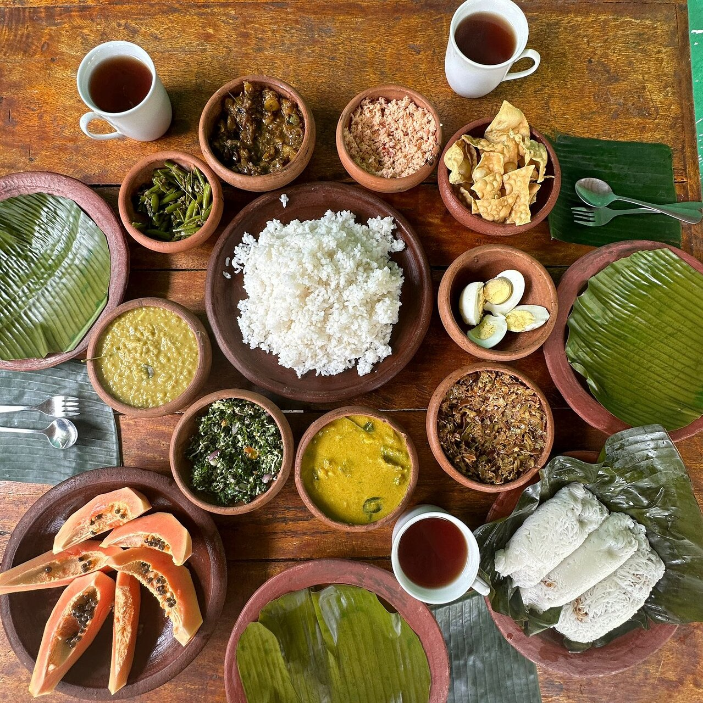

DINING
Dining at Jetwing Hotels
As a family in Sri Lanka, dining experiences are always a pleasure to remember. From the warmth of a rustic dining table to the comfort of our natural wonders, our founder, the late Herbert Cooray, ensured these wondrous specialties of local hospitality remain with us for the rest of time.
Our humble beginnings on the lively fishing coast of Negombo saw sunrise visits to the Lellama for the freshest catch of the day as a routine. Since then, our routine has transcended into a tradition that we still practice to date. Such values extend to each of our dining experiences, where the unique environments at each property have inspired every dining option available at Jetwing Hotels across Sri Lanka. From dining under the stars on a private beach, to tasting ancient recipes in the midst of historic civilisations, your culinary experience at the home of Sri Lankan hospitality is one we look forward to sharing with you. Because when you indulge in our palate with a legacy from all walks of life, your taste buds are bound to remember it for a lifetime.
And as a stimulating pick-me-up to accompany your meal, you also have the option of selecting fine wines from our exclusive cellars, or sipping tropical cocktails inspired by the exotic locations that surround us.
Should you wish, signature experiences among our spaces can also be arranged upon request – anything from the simple comforts of room service to the lavish pleasures of a private terrace in our exclusive environments. Each of our properties feature unique dining options that fit seamlessly into the splendour of our homes – made for all tastes, served with the finest of Sri Lankan hospitality, ready to welcome you at any time.
Savor the Symphony of Sri Lankan Flavors at Jetwing Hotels. Embark on a culinary journey that dances with the spices of our vibrant island. From fragrant rice and curry feasts to tantalizing street food-inspired delights, our dining experiences are a flavorful tapestry that brings Sri Lanka's rich gastronomic heritage to life. Join us to taste the heart and soul of Sri Lankan cuisine at Jetwing Hotels.

 Indulge in the Rich Tapestry of Indian Flavors at Jetwing Hotels. Allow your taste buds to journey through the diverse and aromatic world of Indian cuisine. From exquisite biryanis and tandoori delights to the mouthwatering street food-inspired creations, our dining experiences are a culinary adventure that showcases the essence of India's gastronomic heritage. Join us to savor the authentic tastes and spices of India at Jetwing Hotels.
Experience the Essence of Italy at Jetwing Hotels. Delight in the romance of Italian cuisine as we transport you to the heart of Italy with every bite. From classic pasta dishes and wood-fired pizzas to indulgent desserts, our dining experiences are a culinary love letter to the flavors of Italy. Join us to savor the authentic taste of Italy's gastronomic heritage at Jetwing Hotels.
Satisfy Your Cravings with an Exquisite Buffet at Jetwing Hotels: Dive into a world of delectable Chinese and seafood delights. Our buffet spreads offer a symphony of flavors, from savory Chinese classics to the freshest seafood catches of the day. Join us for an unforgettable culinary experience that combines the best of both worlds at Jetwing Hotels
Savor the Symphony of Sri Lankan Flavors at Jetwing Hotels. Embark on a culinary journey that dances with the spices of our vibrant island. From fragrant rice and curry feasts to tantalizing street food-inspired delights, our dining experiences are a flavorful tapestry that brings Sri Lanka's rich gastronomic heritage to life. Join us to taste the heart and soul of Sri Lankan cuisine at Jetwing Hotels.
Indulge in the Rich Tapestry of Indian Flavors at Jetwing Hotels. Allow your taste buds to journey through the diverse and aromatic world of Indian cuisine. From exquisite biryanis and tandoori delights to the mouthwatering street food-inspired creations, our dining experiences are a culinary adventure that showcases the essence of India's gastronomic heritage. Join us to savor the authentic tastes and spices of India at Jetwing Hotels.
Experience the Essence of Italy at Jetwing Hotels. Delight in the romance of Italian cuisine as we transport you to the heart of Italy with every bite. From classic pasta dishes and wood-fired pizzas to indulgent desserts, our dining experiences are a culinary love letter to the flavors of Italy. Join us to savor the authentic taste of Italy's gastronomic heritage at Jetwing Hotels.
Satisfy Your Cravings with an Exquisite Buffet at Jetwing Hotels: Dive into a world of delectable Chinese and seafood delights. Our buffet spreads offer a symphony of flavors, from savory Chinese classics to the freshest seafood catches of the day. Join us for an unforgettable culinary experience that combines the best of both worlds at Jetwing Hotels
Savor the Symphony of Sri Lankan Flavors at Jetwing Hotels. Embark on a culinary journey that dances with the spices of our vibrant island. From fragrant rice and curry feasts to tantalizing street food-inspired delights, our dining experiences are a flavorful tapestry that brings Sri Lanka's rich gastronomic heritage to life. Join us to taste the heart and soul of Sri Lankan cuisine at Jetwing Hotels.